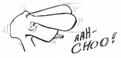
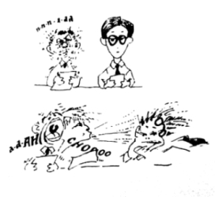

This page has usage examples for the following words:
allergic rhinitis アレルギー性鼻炎 アレルギーせいびえん
common cold 普通の風邪 ふつうのかぜ
cough 咳 せき
drugs for cold, cough, influenza 風邪用（かぜよう）、せき用、インフルエンザ用
nasal mucus 鼻水 はなみず
over the counter drugs 処方箋なし薬
pharmacist 薬剤師 やくざいし
prescription drugs 処方箋薬 しょほうせんやく
rhinitis 鼻炎 びえん
sneeze, sneezing くしゃみ
stuffy nose 鼻づまり はなづまり
I can't adapt quickly to changing weather or temperature.
気温や室温の変化に身体がすぐに順応できません。
きおんやしつおんのへんかに からだがすぐにじゅんのうできません。
Cold air makes my nose itchy and makes me sneeze a lot.
冷たい空気を吸うと、鼻がムズムズしてきて、くしゃみを連発します。
つめたいくうきをすうと はながムズムズしてきて、くしゃみをれんぱつします。
After serveral sneezes, my eyes get watery and red.
数回くしゃみをすると、涙が出て、目が赤く充血します。
すうかいくしゃみをすると、なみだがでて、めがあかくじゅうけつします。

My nose starts running too.
同時に鼻水も出ます。
どうじに はなみずもでます。
I make sure I gargle a few times every day.
うがいをするようにこころがけています。
I have the same symptom all year round.
このような症状を年中繰り返しています。
このようなしょうじょうを ねんじゅうくりかえしています。
I just take cold medicines when it becomes uncomfortable.
不快な時には、風邪薬を飲んでいます。
ふかいなときには、かぜぐすりをのんでいます。
My nose gets stuffy especially in the early morning when it's cooler. I feel stuffed up.
睡眠中、朝方になって気温が低くなると鼻づまりがして、息苦しくなります。
すいみんちゅう、あさがたになって きおんがひくくなると はなづまりがして、いきぐるしくなります。
I try to avoid taking medications while working as they make me sleepy.
仕事中に眠くなるので、薬は極力飲まないようにしています。
しごとちゅうにねむくなるので、くすりは きょくりょく のまないようにしています。

A conversation between a patient and a doctor about sneezing
Patient:
“Sneezing suddenly, several times, followed by runny nose and tears, makes me uncomfortable.” “Breathing gets difficult because of a stuffy nose.” “Cough starts suddenly and doesn’t stop.” I have such symptoms repeatedly throughout the year. I think they appear because I have allergic rhinitis or caught a common cold. I just take over-the-counter drugs.
突然、大きなくしゃみが数回出る。そして、鼻水と涙が出て来て不愉快な気分になる。又、ある時には、鼻づまりのせいで呼吸しづらい。急に咳が出てとまらない。体質的なものから来るのか、こんな症状を年中繰り返しています。アレルギー性鼻炎か、普通の風邪だろうと判断して、たまに処方箋なしの風邪薬を飲んでいます。
Doctor:
All of us catch cold (with runny nose and cough) or suffer from allergic rhinitis one time or another. We know most of the time what causes these conditions, for example, lack of sleep due to overwork or high pollen count. While sneezing and coughing prove that the body’s defense mechanism is functioning, these symptoms may progress to airway infections when the body is not in optimum health. If you have such symptoms as stuffy nose and runny nose at certain times of year or after eating certain foods, you may be allergic to certain things (i. e., allergen). Although you can try to avoid allergens, you would benefit from seeing an allergy specialist. With air conditioning and other modern inventions, physical adjustment is getting harder and harder and thus, paying close attention to daily life becomes even more important.
普通の風邪（鼻水、咳）やアレルギー性鼻炎には誰もが一度ならず悩まされますが、ほとんどの場合、原因に思い当たりますね。例えば、仕事上の無理をして睡眠不足気味であったり、花粉の多い時期であったりする等です。くしゃみや咳は、身体の自己防御機構の最前線が働いている証拠ですが、上記の様に身体の調子が優れていない場合には、気道感染へと進みます。毎年、決まった時期、或いは、ある種の食物を摂取した後に、鼻づまり、鼻水が出るといった症状に気付かれる場合は、アレルギーが考えられます。原因となる物を取り除く（喫煙も悪化の原因となります。）以外に、ご自分であれこれ薬を試されるよりも、アレルギー専門医に相談なさるのも益あることです。空調設備の発達した現代の生活は、身体の調節が追い付かないといったケースも増えています。日常生活に気をつけることがますます大切になっています。

My two cents 一言おせっかい
If you have no time to go see a doctor and need medication quickly, you can purchase over-the-counter preparations of regular strength. If you have experienced hypersensitivity to drugs in the past, you should consult your doctor.
「医師のところへ行く時間がない、ともかく薬を！」という場合は、regular strength とパッケージに書かれた薬から始められた方が安全でしょう。過去に、薬に対して、敏感症の経験のあった方は、医師に相談なさることをお勧めします。
[ku02]
| © 1995-2013 NACOS International Institute. All Rights Reserved. |